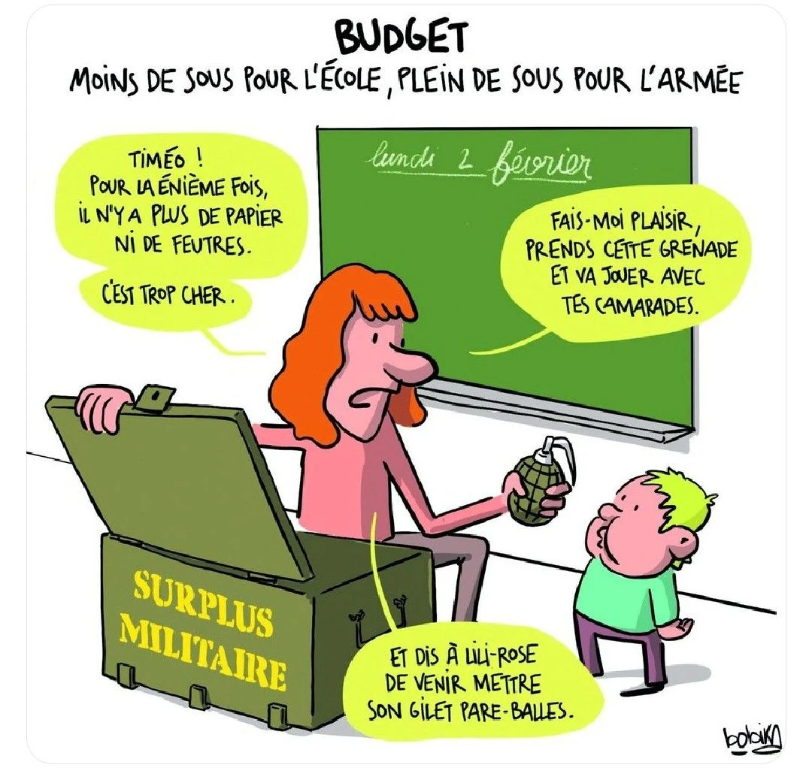

Dessin de presse
Le budget 2026 vu par Bobika dans L’Humanité
Date indiquée par Facebook · 2 février 2026
Repères éditoriaux
Dans L’Humanité, Bobika met en scène le contraste entre les moyens de l’école et ceux de l’armée. La légende du dessin compare les crédits inscrits au projet de loi de finances pour 2026.
Texte conservé avec la publication
L'oeil de #Bobika dans l'Humanité
Le PLF 2026 voit un changement historique puisque le budget de l’armée avec 68,4 milliards (+6,7) dépasse celui de l’Éducation nationale (64,5 milliards d’euros).
L'oeil de #Bobika dans @[100064860845478:2048:l'Humanité]
Le PLF 2026 voit un changement historique puisque le budget de l’armée avec 68,4 milliards (+6,7) dépasse celui de l’Éducation nationale (64,5 milliards d’euros).

Sources
Archive rouge · export Facebook · AR-0002-FB-00881
À lire aussi · Collèges ruraux. Le PCF 79 conteste les fermetures envisagées · Le lien d’origine